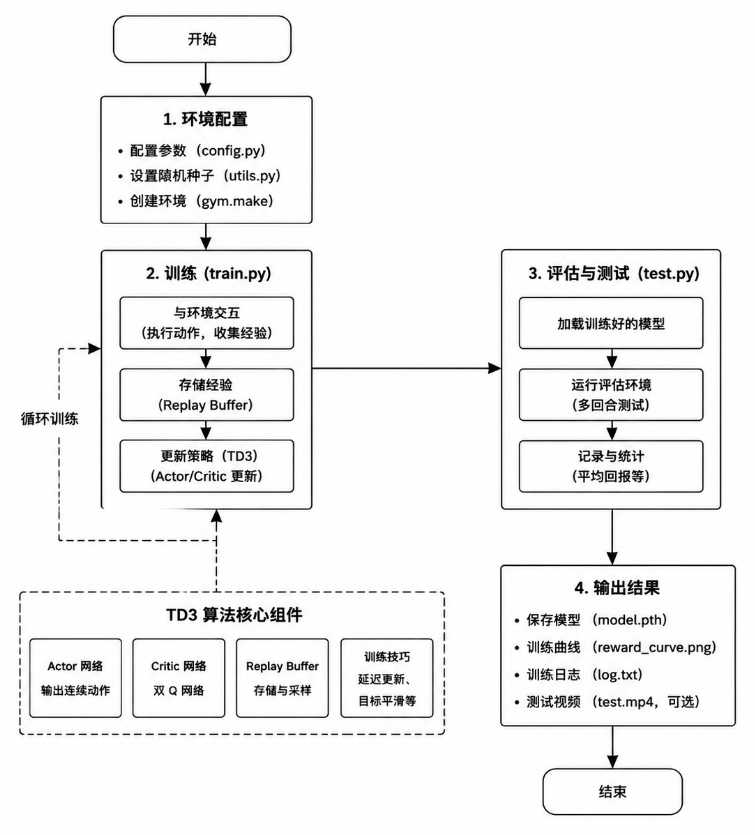
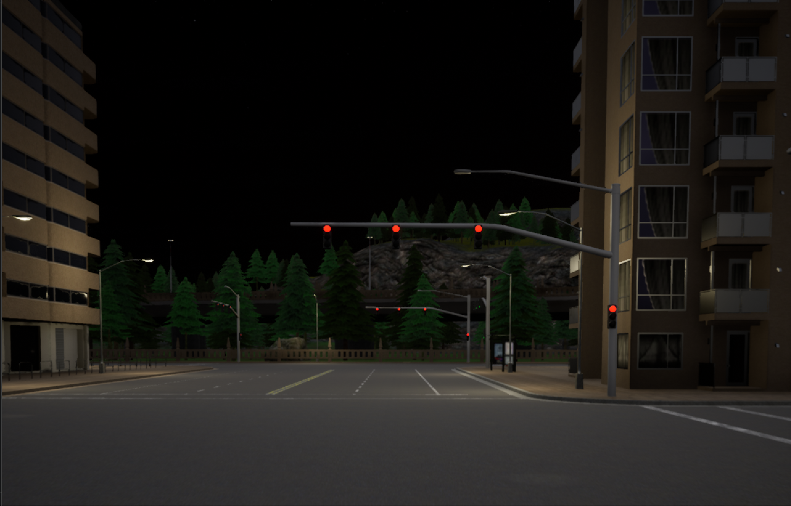

基于 TD3 + CNN 的强化学习自动驾驶系统
本项目使用 TD3（Twin Delayed Deep Deterministic Policy Gradient）算法训练自动驾驶智能体，支持两类仿真环境：
- Gymnasium CarRacing-v3：轻量级二维赛车环境，适合快速验证 TD3 + CNN 视觉控制流程；
- Carla 模拟器：面向自动驾驶研究的三维高保真仿真环境，支持车辆传感器、地图、碰撞检测、车道入侵检测和多天气场景。
项目代码采用模块化结构，将环境封装、视觉预处理、帧堆叠、动作平滑、奖励塑造、TD3 智能体、Actor/Critic 网络和训练入口拆分为独立文件，便于后续扩展到更复杂的自动驾驶任务。
1 项目背景与研究动机
1.1 行业发展现状
随着智能驾驶技术的发展，高维连续动作空间下的车辆控制策略优化成为核心问题。传统基于规则的方法在复杂环境下适应性不足，难以应对多变的道路场景和实时决策需求。因此，本项目旨在通过强化学习框架，构建一个可在仿真环境下自动学习驾驶策略的实验平台，为后续车辆自主决策、车路协同、多传感器融合等研究提供基础支持。
1.2 研究动机与目标
强化学习（RL）凭借“试错—反馈—优化”的自主学习特性，适合解决连续动作空间控制问题。本项目以 CarRacing-v3 和 Carla 为实验环境，构建基于 TD3 + CNN 的自动驾驶强化学习系统，核心目标包括：
- 实现从视觉输入到连续动作输出的端到端驾驶控制；
- 使用 TD3 的双 Critic、目标策略平滑、延迟策略更新和软更新机制提升训练稳定性；
- 将轻量级 CarRacing 环境中的训练流程迁移到 Carla 中，验证环境接口抽象和算法模块的复用性；
- 为后续真实车辆低层级控制、多场景测试、多智能体交互和车路协同研究提供可扩展框架。
2 项目代码结构
src/td3_carracing/
├── README.md
├── requirements.txt
├── main.py # Gymnasium CarRacing-v3 训练入口
├── env_wrappers.py # CarRacing 环境封装：跳帧、图像预处理、帧堆叠、动作平滑、奖励塑造
├── td3_agent.py # CarRacing 版本 TD3 智能体与经验回放
├── td3_models.py # CarRacing 版本 Actor / Critic 网络
├── run.png
└── carla/
├── README.md
├── __init__.py
├── main.py # Carla 训练 / 测试入口
├── carla_env.py # Carla Gym 风格环境适配器
├── env_wrappers.py # Carla 环境封装：跳帧、预处理、帧堆叠、动作平滑、奖励塑造
├── td3_agent.py # Carla 版本 TD3 智能体与经验回放
├── td3_models.py # Carla 版本 Actor / Critic 网络
└── weather_examples.py # Carla 天气示例
3 整体技术架构
系统采用“环境接口层—智能体层—训练与推理层—评估与扩展层”的分层设计。
| 层级 | 核心功能 | 对应代码 |
|---|---|---|
| 环境接口层 | 将 Gymnasium / Carla 环境统一为 reset()、step(action)、observation_space、action_space 接口 |
env_wrappers.py、carla/carla_env.py、carla/env_wrappers.py |
| 智能体层 | 策略生成、价值评估、经验回放、目标网络更新 | td3_agent.py、carla/td3_agent.py |
| 网络模型层 | CNN 图像编码、Actor 连续动作输出、双 Critic Q 值估计 | td3_models.py、carla/td3_models.py |
| 训练与推理层 | episode 循环、探索噪声、模型保存 / 加载、训练和测试切换 | main.py、carla/main.py |
| 扩展层 | Carla 地图、天气、传感器、碰撞和车道入侵信息扩展 | carla/carla_env.py、carla/weather_examples.py |
项目整体执行流程如下：

4 核心理论基础
4.1 TD3 算法核心原理
TD3 是 DDPG 的改进版本，主要用于连续动作空间控制任务。项目中的 TD3 智能体主要包括以下机制：
- 双 Critic 网络：分别估计
Q1(s,a)和Q2(s,a)，训练目标取较小值，缓解 Q 值过估计问题； - 延迟 Actor 更新：Critic 更新更频繁，Actor 每隔若干次 Critic 更新后再更新，降低策略震荡；
- 目标策略平滑：计算目标动作时加入裁剪后的噪声，提升策略对动作扰动的鲁棒性；
- 目标网络软更新：使用
tau对 Actor / Critic 的目标网络进行指数滑动更新。
实现位置：
- CarRacing 版本 TD3 训练逻辑：td3_agent.py
- Carla 版本 TD3 训练逻辑：carla/td3_agent.py
4.2 CNN 视觉状态特征提取
原始环境观测为图像输入。项目先通过环境封装完成灰度化、缩放、归一化和帧堆叠，再送入 Actor / Critic 中的 CNN 编码器提取视觉特征。
实现位置：
- CarRacing 图像预处理与帧堆叠：env_wrappers.py
- Carla 图像预处理与帧堆叠：carla/env_wrappers.py
- Actor / Critic CNN 网络：td3_models.py、carla/td3_models.py
4.3 经验回放机制
当前代码使用环形经验回放缓冲区存储 (state, action, reward, next_state, done)，训练时从缓冲区随机采样 batch，以降低样本相关性、提升数据利用率。
实现位置：
- CarRacing 经验回放：td3_agent.py
- Carla 经验回放：carla/td3_agent.py
说明：当前代码实现的是普通随机经验回放，不是优先级经验回放（PER）。如需加入 PER，可在
ReplayBuffer中增加 priority、importance sampling weight 和 TD error 更新逻辑。
4.4 奖励工程
项目在原始环境奖励基础上增加奖励塑造，用于鼓励平稳驾驶、速度控制和减少异常动作。
CarRacing 版本中，奖励塑造结合速度、转向幅度、转向抖动、赛道 / 草地区域检测等信息；Carla 版本中，奖励塑造结合速度、碰撞、车道入侵、连续大转角、方向盘抖动等信息。
实现位置：
- CarRacing 奖励塑造：env_wrappers.py
- Carla 奖励塑造：carla/env_wrappers.py
- Carla 基础奖励、碰撞和车道入侵信息：carla/carla_env.py
5 具体实现说明
5.1 Gymnasium CarRacing-v3 训练流程
CarRacing 训练入口位于 main.py，主要流程如下：
- 使用
gym.make("CarRacing-v3", render_mode="human")创建环境； - 调用 wrap_env 完成跳帧、灰度化、缩放、归一化、帧堆叠、动作平滑和奖励塑造；
- 根据环境的
observation_space和action_space初始化 TD3Agent； - 训练循环中使用
agent.select_action(state, smooth=True)生成动作，并叠加分通道探索噪声； - 将交互样本写入
ReplayBuffer，调用agent.train()更新 Critic 和 Actor； - 每当产生更高 episode reward 时保存最佳模型，每 100 个 episode 保存一次阶段模型。
5.2 CarRacing 环境封装
CarRacing 环境封装位于 env_wrappers.py，包括：
SkipFrame：重复执行同一个动作并累计奖励，提高训练效率；PreProcessObs：RGB 图像转灰度、缩放到84x84、归一化到[0,1]；StackFrames：堆叠连续 4 帧，并调整为 CNN 输入格式；SmoothActionWrapper：对连续动作做指数平滑，限制相邻时刻方向盘变化；TrackDetectionWrapper：根据图像底部区域的颜色比例估计车辆是否在赛道 / 草地上；RewardShapingWrapper：综合速度、转向、赛道检测和动作平滑性调整奖励。
5.3 TD3 智能体
TD3 智能体实现位于 td3_agent.py 和 carla/td3_agent.py，包含：
ReplayBuffer：环形缓冲区，存储交互样本并随机采样 batch；select_action()：使用 Actor 输出连续动作，并对方向盘、油门、刹车做范围裁剪；train()：计算目标 Q 值、更新双 Critic、延迟更新 Actor、软更新目标网络；save()/load()：分别保存和加载 Actor、Critic1、Critic2 参数。
5.4 Actor / Critic 网络
Actor / Critic 网络定义位于 td3_models.py 和 carla/td3_models.py。
- Actor：输入堆叠后的图像状态，经 CNN 提取特征后输出连续动作
[steer, throttle, brake]； - Critic：输入状态特征和动作向量，输出 Q 值；
- 双 Critic 结构：TD3 训练时使用两个 Critic 网络降低过估计风险。
5.5 适配到 Carla 模拟器
Carla 适配代码位于 src/td3_carracing/carla/，其中核心是 carla_env.py。该文件将 Carla 封装成类似 Gymnasium 的环境，使 TD3 训练代码可以复用 reset()、step(action)、action_space、observation_space 等接口。
Carla 适配内容包括：
-
连接 Carla Server
CarlaEnv通过carla.Client('localhost', 2000)连接本地 Carla 服务，并设置超时时间。 -
地图与车辆初始化
默认使用Town03，通过 Carla blueprint 生成vehicle.tesla.model3，并关闭 autopilot，由 TD3 智能体控制车辆。 -
动作空间映射
Carla 版本动作空间为三维连续控制量：
| 动作 | 范围 | 含义 |
|---|---|---|
steer |
[-1.0, 1.0] |
方向盘转角，负数向左，正数向右 |
throttle |
[0.0, 1.0] |
油门 |
brake |
[0.0, 1.0] |
刹车 |
在 carla_env.py 的 step(action) 中，动作会被转换为 carla.VehicleControl 并作用到车辆上。
-
观察空间适配
Carla 车辆挂载 RGB 摄像头，图像尺寸先由传感器采集，再在process_image()中缩放到84x84。随后通过 carla/env_wrappers.py 转为灰度图并堆叠 4 帧，作为 CNN 输入。 -
传感器接入
Carla 环境接入了： -
RGB 摄像头：提供视觉状态；
- 碰撞传感器：用于终止 episode 和奖励惩罚；
-
车道入侵传感器：用于判断是否压线 / 偏离车道并施加惩罚。
-
奖励函数适配
Carla 基础奖励位于 carla_env.py，综合速度奖励、碰撞惩罚、车道入侵惩罚和每步基础奖励。进一步的奖励塑造位于 carla/env_wrappers.py，包括方向盘大转角惩罚、抖动惩罚、高速平稳驾驶奖励和低速惩罚。 -
天气与场景扩展
Carla 版本支持clear、rainy、foggy、cloudy、wet、random等天气模式，可通过 carla/main.py 的命令行参数传入，也可参考 carla/weather_examples.py 扩展天气测试。 -
训练 / 测试自动切换
carla/main.py 会检测models/td3_carla_best_actor.pth和models/td3_carla_best_critic1.pth是否存在：如果存在则进入测试模式，否则进入训练模式。
6 超参数与训练配置
6.1 CarRacing-v3 默认配置
| 参数 | 当前代码默认值 | 说明 |
|---|---|---|
max_episodes |
2500 | 最大训练回合数 |
max_timesteps |
1200 | 每回合最大步数 |
warmup_episodes |
80 | 预热回合数 |
expl_noise_steer |
0.12 | 初始转向探索噪声 |
expl_noise_throttle |
0.12 | 初始油门探索噪声 |
expl_noise_brake |
0.05 | 初始刹车探索噪声 |
| 模型保存间隔 | 100 episodes | 阶段性保存模型 |
| 最佳模型路径 | models/td3_car_best_* |
保存最高奖励模型 |
配置位置：main.py
6.2 Carla 默认配置
| 参数 | 当前代码默认值 | 说明 |
|---|---|---|
town |
Town03 |
Carla 地图 |
weather |
clear |
天气模式 |
max_episodes |
2000 | 最大训练回合数 |
max_timesteps |
1000 | 每回合最大步数 |
warmup_episodes |
50 | 预热回合数 |
expl_noise_steer |
0.1 | 初始转向探索噪声 |
expl_noise_throttle |
0.15 | 初始油门探索噪声 |
expl_noise_brake |
0.08 | 初始刹车探索噪声 |
| 最佳模型路径 | models/td3_carla_best_* |
保存最高奖励模型 |
配置位置：carla/main.py
7 运行环境与部署步骤
7.1 CarRacing-v3 环境依赖
pip install -r requirements.txt
主要依赖包括：
- Python 3.8+
- PyTorch
- Gymnasium / Box2D
- OpenCV-Python
- NumPy
依赖文件：requirements.txt
7.2 运行 CarRacing-v3 训练
cd src/td3_carracing
python main.py
训练过程中会使用 render_mode="human" 显示游戏窗口，并自动在 models/ 目录下保存模型。
7.3 Carla 环境依赖
运行 Carla 版本前，需要先安装 Carla 模拟器和 Carla Python API。
# 安装基础 Python 依赖
pip install torch numpy opencv-python gymnasium
# 安装 Carla Python API，文件位于 Carla 安装目录中
pip install PythonAPI/carla/dist/carla-<version>-py3-none-any.whl
7.4 启动 Carla Server
Linux：
./CarlaUE4.sh
Windows：
CarlaUE4.exe
7.5 运行 Carla 训练 / 测试
cd src/td3_carracing/carla
python main.py
指定地图和天气：
python main.py --town Town03 --weather clear
python main.py --town Town05 --weather rainy
python main.py --town Town03 --weather random
如果 models/td3_carla_best_actor.pth 和相关 Critic 模型存在，程序会自动进入测试模式；否则进入训练模式。
8 功能效果与运行说明
8.1 CarRacing-v3 模式
- 输入：
84x84灰度图，连续 4 帧堆叠； - 输出：连续动作
[steer, throttle, brake]； - 训练：每步与环境交互、写入经验回放、更新 TD3 网络；
- 保存：最佳模型和每 100 回合 checkpoint；
- 适合用途：快速调试 TD3、奖励函数、动作平滑和图像预处理流程。
- 运行效果：


8.2 Carla 模式
- 输入：车载 RGB 摄像头图像，经预处理后作为 CNN 输入；
- 输出：Carla
VehicleControl中的方向盘、油门、刹车； - 传感器：RGB camera、collision sensor、lane invasion sensor；
- 场景：支持地图和天气切换；
- 适合用途：更接近真实自动驾驶任务的仿真验证。
- 运行效果：

8.3 常见问题与解决
| 问题现象 | 可能原因 | 解决方法 |
|---|---|---|
CarRacing-v3 无法创建 |
Box2D 未安装 | 使用 pip install "gymnasium[box2d]" 或安装项目 requirements.txt |
| 训练窗口无法显示 | 无图形界面或 SDL 问题 | 可在服务器环境中启用虚拟显示，或修改 main.py 中的 SDL 配置 |
| Carla 连接失败 | Carla Server 未启动或端口不对 | 先启动 CarlaUE4.sh / CarlaUE4.exe，确认端口为 2000 |
| Carla Python API 导入失败 | 未安装 Carla wheel | 安装 PythonAPI/carla/dist/carla-<version>-py3-none-any.whl |
| Carla 训练速度慢 | 高保真仿真消耗大 | 降低画面质量、减少渲染、缩短 episode、使用 GPU |
| 车辆频繁碰撞或打转 | 奖励函数、噪声或动作平滑参数不合适 | 调整 carla/env_wrappers.py 和 carla/main.py 中的奖励权重与噪声参数 |
9 后续拓展方向
- 算法扩展
- 集成 SAC、PPO、DrQ-v2 等算法，与 TD3 进行对比；
- 在 CNN 中加入注意力机制或更强视觉 backbone；
-
将普通经验回放升级为优先级经验回放（PER）。
-
Carla 场景扩展
- 增加多地图、多天气、多交通流训练；
- 引入红绿灯、行人、动态车辆等复杂交通要素；
-
使用 Carla 同步模式提升传感器和仿真步进的一致性。
-
多模态传感器融合
- 接入激光雷达、深度相机、IMU、GNSS、速度等信息；
-
设计视觉 + 数值状态的多模态融合网络。
-
安全与可解释性
- 加入动作安全约束，如最大转角变化率、最小制动距离；
-
使用可视化方法分析 CNN 关注区域和策略决策依据。
-
部署优化
- 模型量化、剪枝和 TensorRT 加速；
- 适配 NVIDIA Jetson 等边缘计算设备。